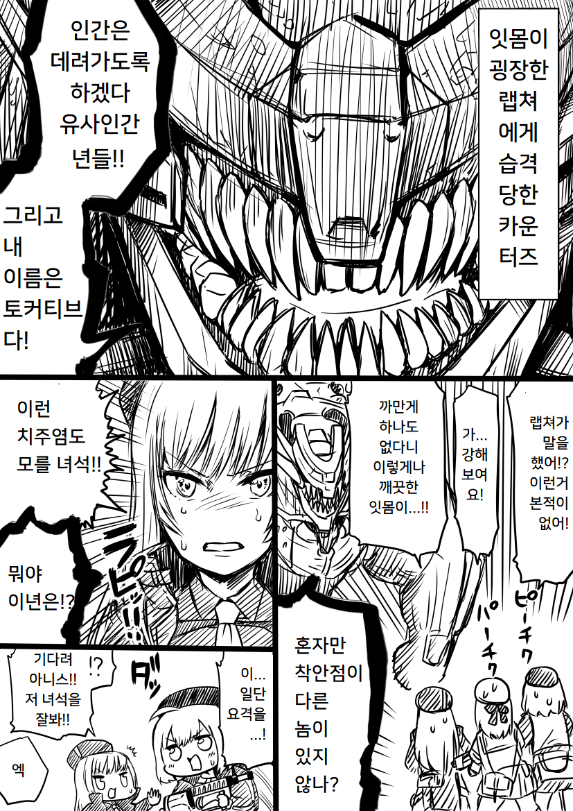
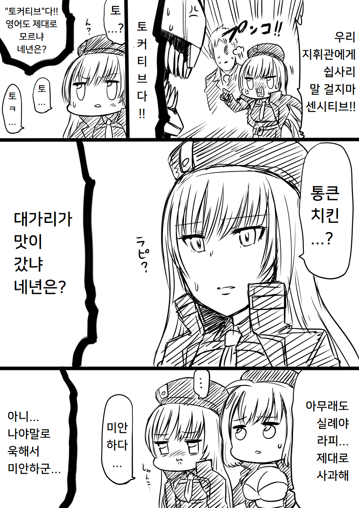
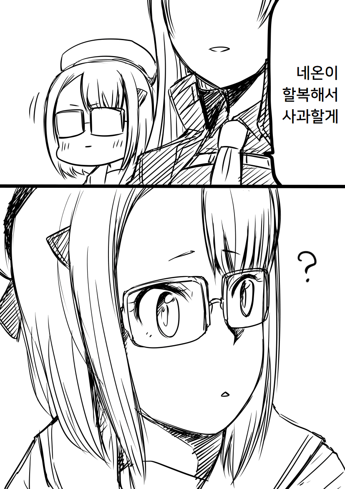

https://twitter.com/jinnseimakegumi/status/1598635954532913152
원본: https://gall.dcinside.com/mgallery/board/view/?id=gov&no=12140
백업 시각:



https://twitter.com/jinnseimakegumi/status/1598635954532913152